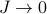
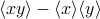
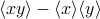

Warm-up: Non-Interacting Spins
Before we go on to apply the variational principle to the Ising model, I want to review the statistical mechanics of a non-interacting paramagnet. The better we understand what we already know, the more prepared we'll be to tackle what we don't know.
More practically speaking, the non-interacting Ising model will be our trial Hamiltonian for when we tackle the full Ising model. So the results from this page will come into play when we we apply the variational principle to the Ising model in its full interacting glory.
The derivation on this page will also teach us a few other things:
It presents a baseline level of understanding. In order to pin down the effects of interactions, we have to first know how life is like without interactions.
It shows us how partition functions simplify and factorize when the Hamiltonian is just the sum of a lot of independent parts.
Our results will be a good sanity check to check our math later, since the full Ising model results should reduce to the expressions on this page if we take .
Okay, onwards to solving the problem.
Defining the Non-interacting Ising model
This model is about the simplest model you could imagine for  particles. We pretend they're all independent and don't interact with each other, so that the Hamiltonian is the sum of each of their energies,
particles. We pretend they're all independent and don't interact with each other, so that the Hamiltonian is the sum of each of their energies,
Each of the particles has the simplest energy spectrum you could think of – a low-energy state and a high-energy state, labeled by +1 and -1, with an energy gap between them of 2b. If we denote the state of the  'th particle by
'th particle by  , then the energy of the 'th particle can be written as
, then the energy of the 'th particle can be written as
and the total energy of all the particles is given by
Yeah, yeah, super boring, we've all seen this before, it's the Ising model with the coupling constant  set to 0. Let's make things a bit more interesting by pretending each spin experiences a different external field
set to 0. Let's make things a bit more interesting by pretending each spin experiences a different external field  . (For instance, maybe spin 1 experiences but spin 42 experiences .) Later on, when we apply this non-interacting Hamiltonian as a variational ansatz to the full Ising model, it turns out that we'll have a nice physical interpretation for the . So we'll keep the distinct for each site for now.
. (For instance, maybe spin 1 experiences but spin 42 experiences .) Later on, when we apply this non-interacting Hamiltonian as a variational ansatz to the full Ising model, it turns out that we'll have a nice physical interpretation for the . So we'll keep the distinct for each site for now.
Now the Hamiltonian takes on the form
Okay onward to statistical mechanics.
Statistical Mechanics of N non-interacting spins
As usual, our first task is to calculate the partition function for the whole system, because then we can figure out the probability of different microstates/configurations/eigenstates/complexions/whatever you want to call it. The key takeaway from here is that
If we have a non-interacting system, where the Hamiltonian is just the sum of separate parts
then the partition function factorizes into the partition function of the separate parts as
where the partition function of each part of the system is given by
as you'd expect.
We've probably seen this takeaway before, but it's always useful to review where it comes from. (And depending on how well we learned statistical mechanics, we may or may not remember this principle…) So let's remind ourselves of the argument:
When we calculate the partition function, we're summing up the exponential  , but since the Hamiltonian
, but since the Hamiltonian  itself is the sum of lots of terms, the exponential factors in to the product of lots of factors:
itself is the sum of lots of terms, the exponential factors in to the product of lots of factors:
Very similarly, when we sum over the configurations of all the spins, it's the same as summing over the configurations of the first spin, and then over the configurations of the second spin, and so on. Mathematically, this means that
(In my opinion, Prof. Kivelson uses a really perverse notation to express multiple sums! I find it much less confusing to write it all out explicitly.)
Anyways, if we put these two facts together to calculate the partition function, we find that
and if we call the partition function of each of the separate subsystems , then we see that for the whole system is just for the subsystems multiplied together:
Spin-up spin-down
In our case of the non-interacting-spin-Ising-model, the energy of the 'th spin is given by , so its partition function is
and the partition function for the whole system is given by
Can you see why no longer factorizes so easily once you introduce interactions into the Hamiltonian? And can you see why transfer matrices worked so nicely for the 1D Ising Model?
The Free Energy
Onwards to the free energy. It's a simple calculation:
Not much to say here, apart from recognizing the log property that the log of a product is the sum of logs; i.e.,  .
.
Did you know that the reason the free energy is defined as  is so that ? This expression says that if you stick the free energy into a Boltzmann factor, it's equal to the sum of the boltzmann factors of all the microstates of your system. It's almost as if the free energy summarized possible energies of the system at a particular temperature! And look, it even takes into account the number of terms that you're adding up on the RHS, a.k.a. the number of microstates, a.k.a. the e to the entropy…
is so that ? This expression says that if you stick the free energy into a Boltzmann factor, it's equal to the sum of the boltzmann factors of all the microstates of your system. It's almost as if the free energy summarized possible energies of the system at a particular temperature! And look, it even takes into account the number of terms that you're adding up on the RHS, a.k.a. the number of microstates, a.k.a. the e to the entropy…
Correlation functions
Okay last step. We still have to calculate and . Remember that these functions tell you the thermal average of spin , and the correlation between two different spins, respectively. And also remember that is also known as the magnetization density. (Well, technically, that's only true if is the same for all the spins on the lattice…see my remark on the bottom of this page.)
Now, since all the spins are independent and uncoupled in this model, it's remarkably easy to calculate the thermal averages of particular spins. We only need to consider the 'th site, and nothing else in the partition function matters. Just watch:
To see why this trick works, write out the entire partition function for the whole system:
Notice that all the factors of on the top and bottom cancel except for . And also notice that we had to have a non-interacting Hamiltonian for this trick to work! No wonder non-interacting systems are so nice.
Gaining some intuition
Shown above is how the magnetization density  varies as we adjust the external field , at various temperatures
varies as we adjust the external field , at various temperatures  . At zero field (), the spin has equal chances of being up and down, so the average magnetization is zero (
. At zero field (), the spin has equal chances of being up and down, so the average magnetization is zero ( ). As we turn the field up, the spin wants to point up; as we turn it down, the spin wants to point down. Once the field is strong enough, the spin has essentially probability 1 of pointing in the direction of the field, and the magnetization saturates at
). As we turn the field up, the spin wants to point up; as we turn it down, the spin wants to point down. Once the field is strong enough, the spin has essentially probability 1 of pointing in the direction of the field, and the magnetization saturates at  (). If you interpret the average as a time-average, this means that the particle spends pretty much all of its time aligned with the field; if you interpret the average as an average over sites on the lattice, it means that most of the spins on the lattice are aligned with the field if it's strong enough.
(). If you interpret the average as a time-average, this means that the particle spends pretty much all of its time aligned with the field; if you interpret the average as an average over sites on the lattice, it means that most of the spins on the lattice are aligned with the field if it's strong enough.
Also, take note of the behavior at different temperatures: as the temperature gets higher and higher ( ), the tanh gets more and more spread out, and it takes a stronger and stronger field to coerce all the spins to point in its direction. Physically, at higher temperatures, there is more random thermal energy in the spins which tends to scramble and disorder any patterns between them, so it takes a stronger field to orient them. And on the other hand, at lower temperatures (
), the tanh gets more and more spread out, and it takes a stronger and stronger field to coerce all the spins to point in its direction. Physically, at higher temperatures, there is more random thermal energy in the spins which tends to scramble and disorder any patterns between them, so it takes a stronger field to orient them. And on the other hand, at lower temperatures ( ), there are less thermal fluctuations to jiggle things up, and less of an entropic incentive for the spins to populate the higher-energy-state, so it doesn't take very strong of a field for the spins to want to point in its direction. In particular, notice that at the limit, the slightest hint of a field in one direction is enough to coerce the spins to completely align.
), there are less thermal fluctuations to jiggle things up, and less of an entropic incentive for the spins to populate the higher-energy-state, so it doesn't take very strong of a field for the spins to want to point in its direction. In particular, notice that at the limit, the slightest hint of a field in one direction is enough to coerce the spins to completely align.
Ah, the entropic bliss of randomness! Ah, the allure of energetic award! Ah, the struggle between yin and yang, between energy and entropy, between order and disorder! What tension, what drama, what thermodynamics!
Neighboring spins are not correlated
Okay, enough vivid language. There's one more task at hand: we need to find the correlation functions . Again, here we can aply the trick of independence: since the spins are independent in a non-coupled model, they must be uncorrelated. In other words, whether some spin  points up or down does not depend on any other spin . Statistically, this statement of independence is expressed as
points up or down does not depend on any other spin . Statistically, this statement of independence is expressed as
As a fun exercise, you might want to expand out both sides of the equation to convince yourself why this statements is true for non-interacting Hamiltonians.
Now, it might not be intuitive why this statement means that sites  and are uncorrelated, but you'll have to take my statistical word for it. I honestly don't have a very good intuitive answer myself.
and are uncorrelated, but you'll have to take my statistical word for it. I honestly don't have a very good intuitive answer myself.
Perhaps as justification, you might think back to stats class in high school, where you learned about linear regression between two variables
 and
and  , and you learned about a mysterious formula for the correlation coefficient
, and you learned about a mysterious formula for the correlation coefficient  that had the expression  in the numerator. Remember that means that and are uncorrelated…
that had the expression  in the numerator. Remember that means that and are uncorrelated…As another bit of justification, maybe you can think back to the exact 1D Ising model, where neighboring spins did interact with eachother and thus were correlated in the thermal ensembles, and then the correlation function had the form of
where the decaying exponential adds a significant contribution if and are close to eachother, and then dies out once they're further apart than the correlation length  (‘‘xi’’).
(‘‘xi’’).
Summmary
Alright, let's recap what we learned about non-interacting spins:
Since the Hamiltonian separates into a sum of independent energies, the partition function factorizes into a product of independent mini-partition-functions as .
The free energy is .
The average spin is . We spent a bit of time staring at the graph and interpreting what it meant.
The spin-spin correlation function told us that the spins are uncorrelated with each other, which makes a lot of sense, since there's no spin-spin interaction terms in the Hamiltonian.
Wonderful. Next up, we'll apply this non-interacting model as the variational ansatz to the full Ising model. Onwards!